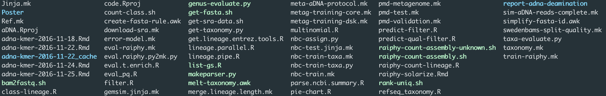

My Experience on Metagenomics and Workflows
aMeta Workhsop
Who am I?
- Emrah Kırdök, Ph.D.
- I am trained as a biologist
- Working on ancient metagenomics
- Giving lectures on bioinformatics and data analysis
Hi I am Emrah Kırdök. I am working at Mersin University Department of Biotechnology as an Assistant Prof.
Currently, I am working on ancient metagenomics and bioinformatics.
Also I am teaching bioinformatics and data analysis at graduate and undergraduate level.
What am I going to talk?
- My experience on bioinformatics and metagenomics
- Simple tricks that I used
- How aMeta helped me to understand
snakemake - My ideas on reproducible pipelines with
snakemake - Hopefully, you will get an idea
I am trained as a biologist. After my Ph.D., I moved to bioinformaitcs and ancient metagenomics field.
In this presentation, I will talk about by experiences in bioinformtics filed, in a life scientist perspective.
Today, bioinformatics is mostly done by trial and error since there are vast amounts of tools and methods. So, you run something, you observe, you fix and run again.
This doing and learning process could be sometimes very confusing, espacially if you are new to bioinformatics.
But there are some tricks and tips that make your life easier in the long run. In this presentation I will explain you my experience on organizing bioinformatic projects, keeping a tidy folder.
Bioinformatics methdodology
The very basic idea of the bioinformatics:
I was basically a fish out of the sea when I first started working on bioinformatics.
The very first thing I learned is that, every tool takes an input and produces an output. This idea was very straightforward when using bash.
You’ll simply write your command line and check wait until the program terminates. Often you will get an error message, that you need to debug. After you fix all the errors, then you program will work as expected, and you will have an output.
Bioinformatics methdodology
Generally it is more complicated…
However, generally it is more complicated. You will have more than one input and more then one ouputs. Often, you will have some parameters to fine tune.
Bioinformatics methdodology
Actually it is much more complicated…
The core idea of bioinformatics methodology is to combine several tools into one neat workflow.
But it is much more complicated then that. To do a bionformatics research, you’ll need to use a lot of different tools, a lot of files, different paramters.
Often you’ll need to optimize parameters to get the correct result.
This is the general idea of bioinformatics work style.
Documenting is everything
Then you’ll create bash scripts to automate your codes.
Documenting is everything
Soon you’ll have a folder full of results, bash scripts, and other stuff.

Soon you will have a folder full of results. Then it becomes very tricky to find your way in these big folders. You need to document
You also delete stuff!
- Also, sometimes you can delete stuff
- Use
rmvery carefully! - Make data read only!
Lessons learnt
- Keep a tidy folder
- Always document your code
- Well organized
- make raw data read only!
- Workflowing
- reproduce your results
So, at this stage I learnd the importance of keeping a tidy folder and keeping track of my codes. I always write my codes in bash scripts and also document the idea in the project.
When yoy want to work on this project after 10 years, you need to remember the codes. So documentation is important.
Also, make your data read only. If you keep your scripts and results intact, you can reproducce the results any time you want.
Keeping a tidy folder
A folder explanation:
project
|----- data
|----- scripts
|----- results
|----- reports
|----- README.mdA tidy folder keep your research fast.
Document stuff
- I generally place a
README.mdfile - I generally write on markdown
- documenting is everyhting!
If you keep documenting your steps, it will be easy to reproducec results after a long time. Also